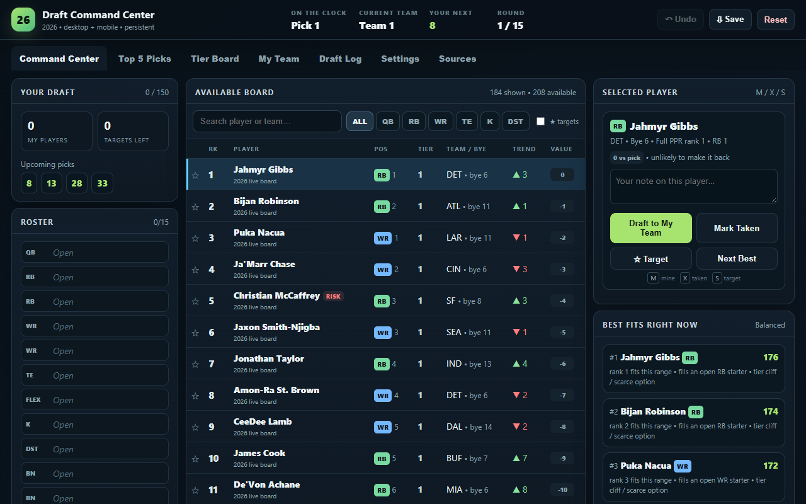

Connecting the board to the roster
Recording a pick updates player availability, the draft log, upcoming turns, and roster needs. Recommendations consider the user's roster and chosen strategy alongside the bundled player rankings.
Player data is a saved 2026 snapshot. The app does not fetch live rankings or act as a projection model.
